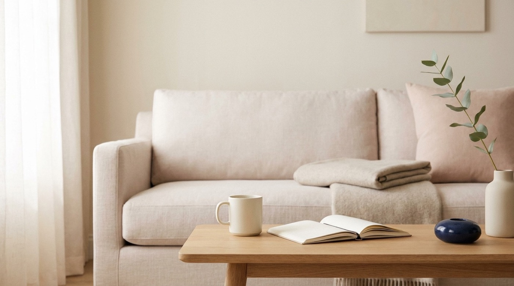

Support that helps women with ADHD live the life they want, in a way that works for them. You have goals. You have ideas. You know what you want to do.
When ADHD gets in the way of your best intentions, even simple tasks can feel harder than they should. You don't need more willpower. You need practical systems that make follow-through easier.
Early access · Free resources · No spam
Your brain is not the problem.
Simple beats perfect.
Most women with ADHD don't struggle because they don't care or don't know what to do. They struggle because turning good intentions into consistent action can be harder than most people realize.
Sparked & Steady exists to help bridge that gap with practical tools, simple systems, and a community that understands.
We help women with ADHD bridge the space between inspiration and implementation.
Walk this path with a community of women who understand the journey, encourage one another, celebrate progress, and remind you that you don't have to figure it all out alone.
Discover practical tech, AI tools, and simple tips that help lighten your mental load, simplify everyday life, and make follow-through easier.
Short, practical learning you can access on demand, designed to help you turn ideas into action.
Ready-to-use tools and templates designed to save you time, reduce overwhelm, and make getting started easier.
Keep learning, growing, and moving forward with fresh ideas, practical resources, and new content every month.

The goal isn't to change who you are. It's to build a life that supports who you're becoming.
To help women with ADHD bridge the space between inspiration and implementation.
Systems designed to reduce overwhelm, simplify decisions, and create consistency in the moments that matter most.
Build a life that supports your spark — steadily, and on your own terms.
I didn't start my career as an entrepreneur. I started as an educator, working with children with ADHD and helping them find ways to succeed in a world that wasn't always designed for how their brains worked.
Later, I became an entrepreneur, building a successful children's clothing company and eventually leading a thriving real estate team in Greenville, South Carolina. From the outside, it looked like I had it all together.
Then, in my 40s, I was diagnosed with ADHD.
Suddenly, so many things made sense. The constant mental clutter. The overwhelm. The unfinished projects. The feeling that no matter how hard I worked, I couldn't seem to create the consistency I wanted.
I realized I didn't need more willpower. I needed systems that worked with my brain instead of against it. That's why I created Sparked & Steady.
My hope is that the tools, systems, and community you'll find here help you close the gap between who you are today and who you know you're capable of becoming.
Warmly,
Wendy Morrow Turner
Founder, Sparked & Steady
Sparked & Steady is just getting started. Join the waitlist for early access, behind-the-scenes updates, free resources, and first access to new tools, courses, and our community as they're released.
Thank you — you're on the list.
Watch your inbox for what's coming next.